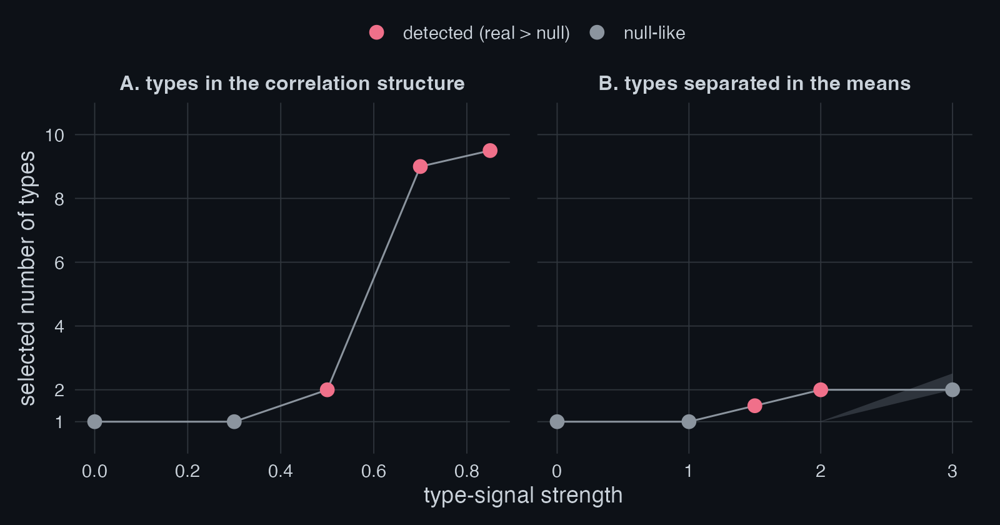
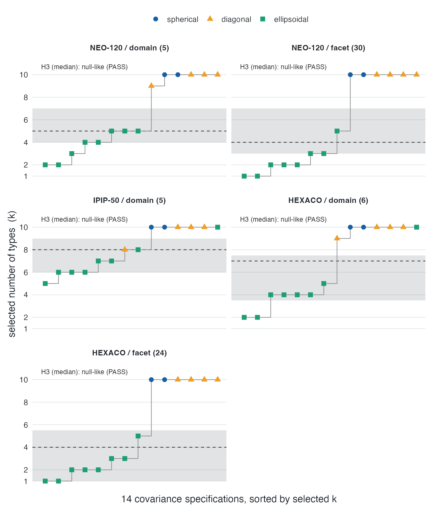
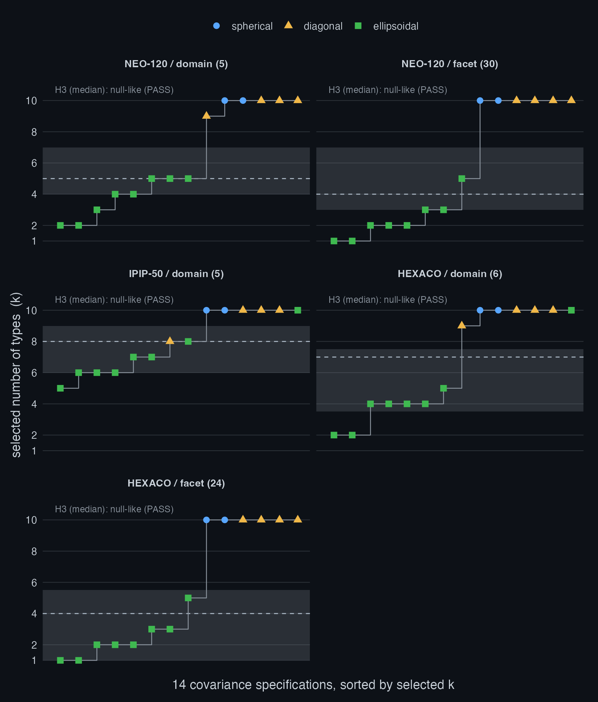
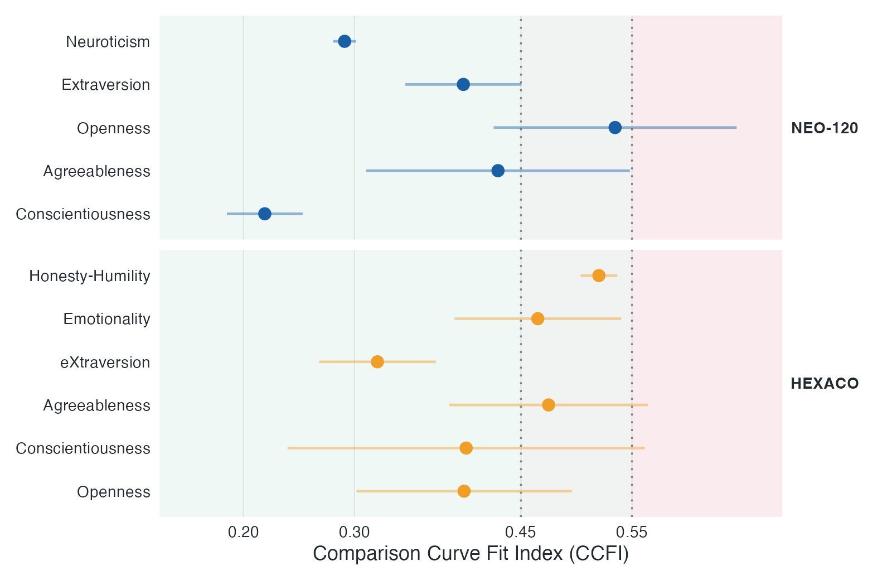
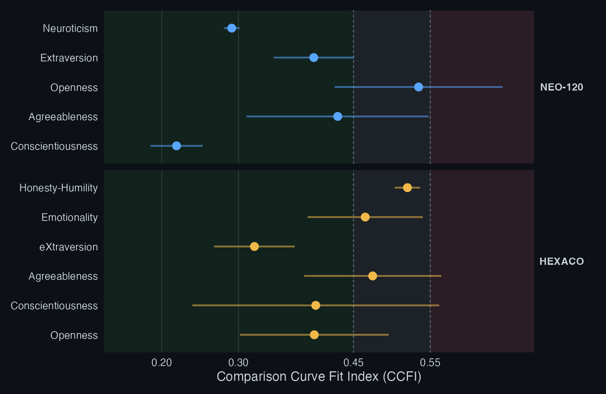

The problem: clustering always returns clusters
Give a clustering method a single smooth cloud of points and it will still return clusters. Model-selection criteria behave the same way: BIC, the bootstrap likelihood-ratio test, the gap statistic all pick some number of groups, and on data with skew or correlation they often pick several. So when an analysis reports that a dataset contains, say, four personality types, the number may describe the population, or it may describe only the shape of the data under that method. Nothing in the output tells you which.
The matched-null test separates the two by asking a single question: would a dataset with the same margins and the same correlations, but no types, have produced the same answer?
Constructing the matched null
We want a reference dataset that matches the real one in every respect that is not in question, and is empty of the one thing that is. Two things are not in question: every variable’s marginal distribution, with its skew, its bounds and its lumps at round numbers on a Likert scale, and the correlations among variables. Latent groups, the thing in question, must be absent by construction.
By Sklar’s theorem that separation is always available: any joint distribution factors into its own margins and a copula carrying the dependence between them. Here the margins are taken from the real data and the copula is Gaussian.
Write the data as columns with empirical margins and correlation matrix . Draw with tuned so the induced correlations match , then send each column back through its own empirical quantile function, . Read from the inside out, that asks which percentile the Gaussian draw sits at and returns the real data value at that percentile.
Three properties carry the argument. Each has exactly the empirical distribution of , since the twin reshuffles observed values and invents none, so no marginal test can separate the two. The correlation matrix of matches to within sampling error. And the joint density is unimodal, with no islands or gaps, so the twin contains no cluster structure by construction. Whatever your pipeline reports on it was manufactured by the pipeline.
The test statistic
Let be your pipeline, wrapped as a function that returns one number, typically the selected number of clusters, but it can be any scalar measure of clustering strength. Compute the real statistic , then generate twins and compute with . The one-sided -value is
The verdict reads null-like when sits inside the interval the twins produce, and exceeds the null when the real data stand out. The null is defined at the level of the data, not the pipeline, so the same twins work for a -means heuristic, a published typology’s exact workflow, or a mixture model.
matched_null_test(x, cluster_fn = function(d) mclust::Mclust(d, verbose = FALSE)$G, R = 200)Positive controls: sensitivity to genuine types
A test that never fires is worthless: it must stay quiet on typeless data and fire when genuine types are present. Figure 1 plants real types of two kinds and raises the signal strength.


In panel A the types share identical margins and differ only in the orientation of their within-group correlations. A single Gaussian copula has one correlation matrix and cannot reproduce two, so as the within-group correlation grows the test fires. This is the regime that ordinary mean-comparison and marginal tests miss entirely: the groups are invisible one variable at a time and appear only in the joint dependence. In panel B the types are separated in their means in the familiar way, and the test again fires as the separation grows. Where there is structure the matched null cannot carry, the test finds it.
Empirical application: personality inventories
The motivating application is the claim that personality inventories
contain a small number of latent “types.” Running the test across all
fourteen mclust covariance parameterizations, on several
public Big Five and HEXACO datasets, gives the specification curve in Figure 2.


The number of types the pipeline selects (the step function) sits
inside the band the twins produce (grey) for the great majority of
specifications, and the median verdict is null-like in every dataset.
The handful of specifications that climb above the band are the most
flexible covariance models, which read the data’s skew and correlation
as extra components; the twins, which share that skew and correlation,
climb with them. The apparent “types” are the shape of the data under
mclust, not latent kinds of people.
Convergent evidence from taxometrics
The mixture-model result lines up with an older tradition. The Comparison Curve Fit Index (CCFI) from taxometric analysis scores whether a construct is better described as categorical (taxonic) or continuous (dimensional), with values below the midpoint favouring a dimensional structure.


Every trait, in both inventories, falls on the dimensional side. Two methodological traditions that rarely meet, mixture-model cluster counting and taxometrics, return the same verdict, which is reassuring precisely because their assumptions differ.
Heavy-tailed alternatives: the t-copula null
A verdict of exceeds the Gaussian null licenses only the conclusion that the data carry structure beyond their margins and correlations. That structure need not be types. Heavy-tailed dependence, where extreme values across variables tend to arrive together, also exceeds a Gaussian null, and real questionnaire and clinical data are heavy-tailed more often than not. To keep the two readings apart, rerun the test with t-copula twins: same margins, same correlations, but tails that co-move.
matched_null_test(x, cluster_fn, R = 200, copula = "t", df = 8) # moderate tails
matched_null_test(x, cluster_fn, R = 200, copula = "t", df = 3) # heavy tailsThe ladder reads simply. A result that exceeds the Gaussian twins and the t twins is hard to attribute to tails. A result the t twins reproduce was tail dependence, not types. Either way the verdict is sharper than a single null could give.
What the test declines to answer
Go back to panel B of Figure 1, the one where the types are separated in their means. The test detects them at 1.5 and at 2 standard deviations of separation, and then, at 3 standard deviations, where the types are further apart than anywhere else in the figure, it goes quiet. Read as a power curve that is backwards. It cost me some time to be sure it was not a bug.
It is not, and the reason is the construction. At 3 standard deviations each variable is visibly bimodal on its own. The twin copies the observed values, so it copies that bimodal margin, and a bimodal margin is enough to produce two components. The twin reports two clusters as well, the real value no longer stands out, and the verdict is null-like on a structure that is genuinely there.
Calling this a feature is too easy, so here is the honest version. It follows from a choice, and the choice could have gone the other way. Preserving the observed margins exactly means conceding marginal shape to the null: whatever a single variable already displays becomes part of the reference, so it can never count as evidence. A null that forced its margins to be unimodal would call the same data clustered, and under its own hypothesis it would be right. Two tests, two claims.
The question this one actually settles is narrower than “are there types.” It is whether there is cluster structure beyond what the margins and correlations already imply. Most of the time that is the question worth asking, since contested typologies rarely live in the margins. A variable that is plainly two-humped needs no copula null to reveal its groups; a histogram does it. Panel A is where the test earns its keep: every margin looks ordinary and the groups exist only in the joint dependence.
None of this yields a fix, only a habit. Inspect the margins for pronounced multimodality before you rely on the count test, and tie-break granular Likert-type scales before running formal unimodality tests. If a margin is visibly two-humped, this test is the wrong instrument and will tell you nothing.
Related approaches
Testing a clustering result against a reference distribution is an old idea, and the choice of reference is what separates the methods.
The gap statistic (Tibshirani, Walther, and Hastie, 2001) compares the observed within-cluster dispersion to a uniform or PCA-aligned reference, which ignores the correlation structure of the data. SigClust (Liu, Hayes, Nobel, and Marron, 2008) tests a single two-way split against a single Gaussian null. Neither preserves the marginal distributions, which matters for the skewed and granular scales common in questionnaire data.
The closest relative is UNPaC (Helgeson, Vock, and Bair, 2021), which
also builds its reference with a Gaussian copula. Two things differ.
UNPaC’s reference is ortho-unimodal: the margins are smoothed
by kernel density estimation and made unimodal, so a bimodal variable
counts as evidence for clustering. matchednull reuses the
observed values, so the margins of the twin are identical to the real
ones and marginal shape is conceded to the null. The test is therefore
the more conservative of the two, and it answers a narrower question: is
there cluster structure beyond what the margins and
correlations already imply. UNPaC also compares a fixed cluster index,
while matched_null_test() compares whatever scalar the
user’s own pipeline returns, which is what allows a published typology’s
exact workflow to be tested as it was actually run.
They complement each other. A result that clears the unimodal reference of UNPaC and the margin-preserving reference here is supported on both readings.
References
The method, its positive controls, and its false-positive calibration are described in the accompanying paper, Types Without Taxa: A Covariance-Matched-Null Multiverse Test of Categorical versus Continuous Personality Structure (Meng, 2026; preregistration: https://doi.org/10.17605/OSF.IO/2EKCG).
Helgeson, E. S., Vock, D. M., and Bair, E. (2021). Nonparametric cluster significance testing with reference to a unimodal null distribution. Biometrics, 77(4), 1215-1226. https://doi.org/10.1111/biom.13376
Liu, Y., Hayes, D. N., Nobel, A., and Marron, J. S. (2008). Statistical significance of clustering for high-dimension, low-sample size data. Journal of the American Statistical Association, 103(483), 1281-1293. https://doi.org/10.1198/016214508000000454
Tibshirani, R., Walther, G., and Hastie, T. (2001). Estimating the number of clusters in a data set via the gap statistic. Journal of the Royal Statistical Society Series B, 63(2), 411-423. https://doi.org/10.1111/1467-9868.00293